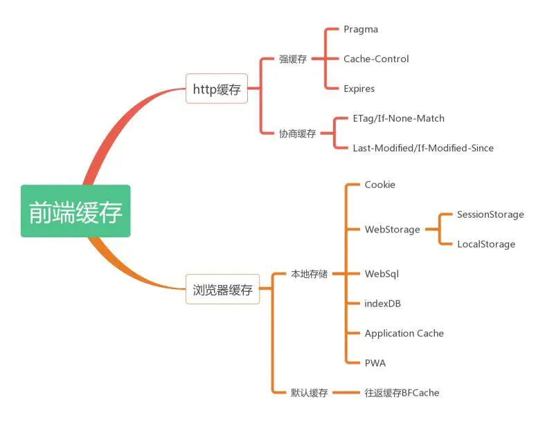
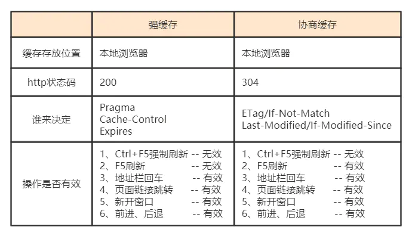
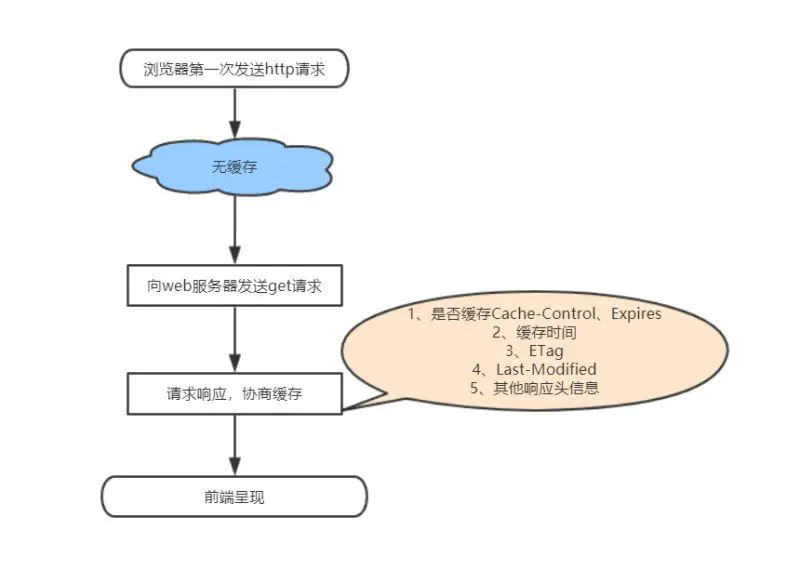
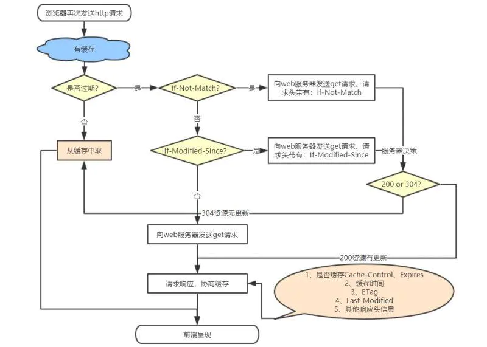

前端缓存知识点

什么是HTTP缓存
http缓存指的是: 当客户端向服务器请求资源时，会先抵达浏览器缓存，如果浏览器有“要请求资源”的副本，就可以直接从浏览器缓存中提取而不是从原始服务器中提取这个资源。
常见的http缓存只能缓存get请求响应的资源，对于其他类型的响应则无能为力，所以后续说的请求缓存都是指GET请求。
http缓存都是从第二次请求开始的。第一次请求资源时，服务器返回资源，并在respone header头中回传资源的缓存参数；第二次请求时，浏览器判断这些请求参数，命中强缓存就直接200，否则就把请求参数加到request header头中传给服务器，看是否命中协商缓存，命中则返回304，否则服务器会返回新的资源。
为什么要使用HTTP缓存 ？
- 减少了冗余的数据传输，节省了网费。
- 缓解了服务器的压力， 大大提高了网站的性能
- 加快了客户端加载网页的速度
如何使用HTTP缓存 ？
一般需要缓存的资源有html页面和其他静态资源：
1、 html页面缓存的设置主要是在
<head>标签中嵌入<meta>标签，这种方式只对页面有效，对页面上的资源无效
1.1 html页面禁用缓存的设置如下：
<meta http-equiv="cache-control" content="no-cache" \> |
1.2 html设置缓存如下：
<meta http-equiv="Cache-Control" content="max-age=7200" /> |
2、 静态资源的缓存一般是在web服务器上配置的，常用的web服务器有：nginx、apache。具体的配置这里不做详细介绍，大家自行查阅。
3、不想使用缓存的几种方式
- Ctrl + F5强制刷新，都会直接向服务器提取数据。
- 按F5刷新或浏览器的刷新按钮，默认加上Cache-Control：max-age=0，即会走协商缓存。
- 还有就是上面1、2中禁用缓存的做法
HTTP缓存的几个注意点
1、强缓存情况下，只要缓存还没过期，就会直接从缓存中取数据，就算服务器端有数据变化，也不会从服务器端获取了，这样就无法获取到修改后的数据。解决的办法有：在修改后的资源加上随机数，确保不会从缓存中取。
例如：http://www.kimshare.club/kim/common.css?v=22324432
2、尽量减少304的请求，因为我们知道，协商缓存每次都会与后台服务器进行交互，所以性能上不是很好。从性能上来看尽量多使用强缓存。
3、与缓存相关的几个header属性有：Vary、Date/Age。
HTTP缓存的分类
- 根据是否需要重新向服务器发起请求来分类，可分为强制缓存，协商缓存
- 根据是否可以被单个或者多个用户使用来分类，可分为私有缓存，共享缓存（不care）
强制缓存如果生效，不需要再和服务器发生交互，而协商缓存不管是否生效，都需要与服务端发生交互。下面是强制缓存和协商缓存的一些对比：

强缓存
强制缓存在缓存数据未失效的情况下（即Cache-Control的max-age没有过期或者Expires的缓存时间没有过期），那么就会直接使用浏览器的缓存数据，不会再向服务器发送任何请求。
强制缓存生效时，http状态码为200。这种方式页面的加载速度是最快的，性能也是很好的，但是在这期间，如果服务器端的资源修改了，页面上是拿不到的，因为它不会再向服务器发请求了。
这种情况就是我们在开发种经常遇到的，比如你修改了页面上的某个样式，在页面上刷新了但没有生效，因为走的是强缓存，所以Ctrl + F5一顿操作之后就好了。
跟强制缓存相关的header头属性有（Pragma/Cache-Control/Expires）
协商缓存
当第一次请求时服务器返回的响应头中没有Cache-Control和Expires或者Cache-Control和Expires过期还或者它的属性设置为no-cache时(即不走强缓存)，那么浏览器第二次请求时就会与服务器进行协商，与服务器端对比判断资源是否进行了修改更新。
如果服务器端的资源没有修改，那么就会返回304状态码，告诉浏览器可以使用缓存中的数据，这样就减少了服务器的数据传输压力。
如果数据有更新就会返回200状态码，服务器就会返回更新后的资源并且将缓存信息一起返回。
跟协商缓存相关的header头属性有（ETag/If-Not-Match 、Last-Modified/If-Modified-Since）请求头和响应头需要成对出现。
总结
下图是浏览器首次和再次发送http请求的执行流程图：

